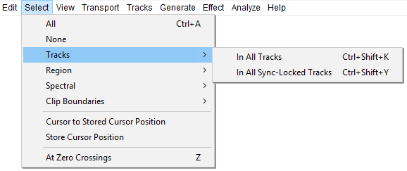
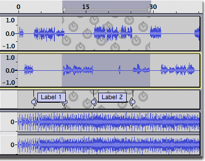
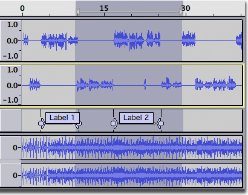
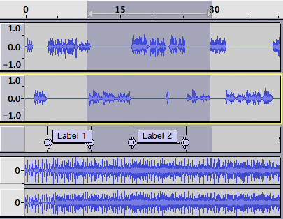

Select Menu: Tracks
These commands extend the current selection up and/or down into all tracks, or Sync-Locked tracks in the project.
- Click, or hover, on any menu item in the image to read about that command. Skip the image
- 
In All Tracks Ctrl + Shift + K
Extends the current selection up and/or down into all tracks in the project.
- 
- 
In All Sync-Locked Tracks Ctrl + Shift + Y
Extends the current selection up and/or down into all Sync-Locked tracks in the currently selected track group.
- 